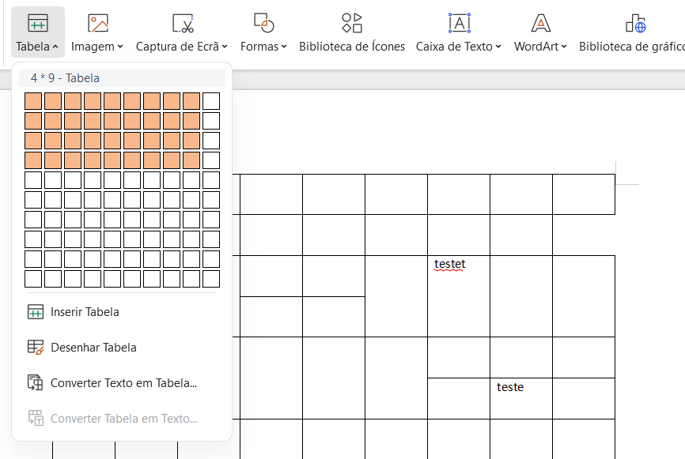
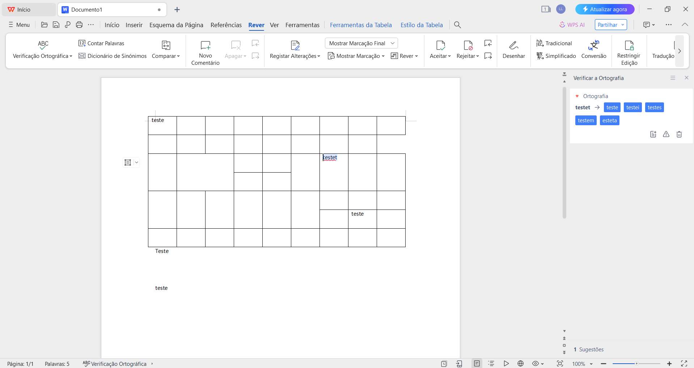
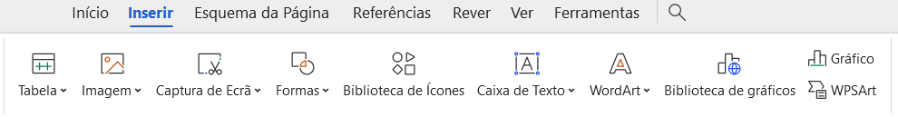
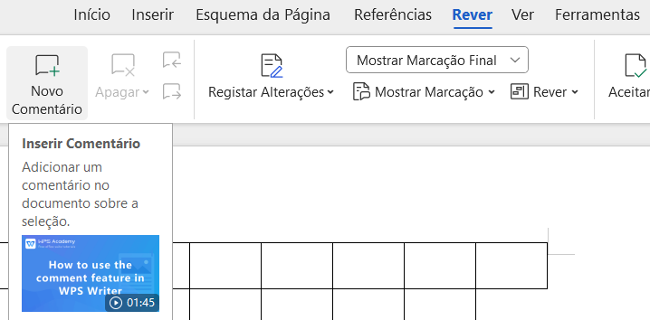

Next to PowerPoint
WORD Tuturial

Font Types:
Selecting a Font Type:
- Open the document in Microsoft Word.
- Select the text you want to format or click on a blank area to set the font type before typing.
- In the toolbar, you will see a drop-down box displaying the current font type. Click on this box to open a drop-down list with different available font types.
- Scroll through the list and click on the desired font type to apply it to the selected text or the text you type from that point onward.
Tipos de Fonte:
Selecionando um tipo de fonte:
- Abra o documento no Microsoft Word.
- Selecione o texto que deseja formatar ou clique em uma área em branco para definir o tipo de fonte antes de digitar.
- Na barra de ferramentas, você verá uma caixa suspensa exibindo o tipo de fonte atual. Clique nesta caixa para abrir uma lista suspensa com diferentes tipos de fontes disponíveis.
- Percorra a lista e clique no tipo de fonte desejado para aplicá-lo ao texto selecionado ou ao texto digitado a partir desse ponto.

Changing Font Size:
Select the text you want to format.
- In the toolbar, you will see a drop-down box displaying the current font size. Click on this box to open a drop-down list with different available font sizes.
- Scroll through the list and click on the desired font size to apply it to the selected text.
Alterar o tamanho da fonte:
Selecione o texto que deseja formatar.
- Na barra de ferramentas, você verá uma caixa suspensa exibindo o tamanho da fonte atual. Clique nesta caixa para abrir uma lista suspensa com diferentes tamanhos de fonte disponíveis.
- Percorra a lista e clique no tamanho de fonte desejado para aplicá-lo ao texto selecionado.
Paragraphs:
Parágrafos:
Text Alignment:
Select the paragraph or text you want to align.
- In the toolbar, you will see icons for aligning text left, center, right, and justify. Click on the desired icon to apply the alignment to the selected text.
Alinhamento de texto:
Selecione o parágrafo ou texto que deseja alinhar.
- Na barra de ferramentas, você verá ícones para alinhar o texto à esquerda, ao centro, à direita e justificar. Clique no ícone desejado para aplicar o alinhamento ao texto selecionado.

Line and Paragraph Spacing:
Select the paragraph or text to which you want to apply spacing.
- In the toolbar, you will see an icon for line spacing. Click on the arrow next to this icon to open spacing options.
- Choose one of the predefined options for line spacing (such as 1.0, 1.5, 2.0, etc.) or click on "Line Spacing Options..." to set a custom spacing.
Espaçamento entre linhas e parágrafos:
Selecione o parágrafo ou texto ao qual deseja aplicar espaçamento.
- Na barra de ferramentas, você verá um ícone para espaçamento entre linhas. Clique na seta ao lado deste ícone para abrir as opções de espaçamento.
- Escolha uma das opções predefinidas de espaçamento entre linhas (como 1,0, 1,5, 2,0 etc.) ou clique em "Opções de espaçamento entre linhas..." para definir um espaçamento personalizado.
Page Breaks:
Inserting a Page Break:
- Place the cursor where you want to insert the page break.
- In the toolbar, click on the "Layout" tab (or "Home" tab depending on the Word version).
- Then, click on the "Page Break" or "Break" icon and choose "Page Break" from the drop-down menu.
Quebras de página:
Inserir uma quebra de página:
- Coloque o cursor onde deseja inserir a quebra de página.
- Na barra de ferramentas, clique na guia "Layout" (ou na guia "Home" dependendo da versão do Word).
- Em seguida, clique no ícone "Quebra de página" ou "Quebra de página" e escolha "Quebra de página" no menu suspenso.

Styles:
Applying Text Styles:
- Text styles are predefined sets of formatting that can be applied to text to ensure consistency and ease formatting.
- In the "Home" tab, in the "Styles" section, you will see a gallery of predefined styles such as Title, Subtitle, Body Text, etc.
- Select the text to which you want to apply a style and click on the desired style in the gallery.
Estilos:
Aplicar estilos de texto:
- Os estilos de texto são conjuntos predefinidos de formatação que podem ser aplicados ao texto para garantir consistência e facilitar a formatação.
- Na aba "Home", na seção "Estilos", você verá uma galeria de estilos predefinidos como Título, Subtítulo, Corpo do Texto, etc.
- Selecione o texto ao qual deseja aplicar um estilo e clique no estilo desejado na galeria.

Creating and Customizing Styles:
To create a new style or customize an existing one, select the formatted text as desired.
- Right-click on the style in the style gallery and choose "Modify...".
- In the "Modify Style" dialog box, you can change the style formatting (such as font type, size, color, etc.) and give a name to the custom style.
Criar e Personalizar estilos:
Para criar um novo estilo ou personalizar um existente, selecione o texto formatado conforme desejado.
- Clique com o botão direito no estilo na galeria de estilos e escolha "Modificar...".
- Na caixa de diálogo "Modificar estilo", você pode alterar a formatação do estilo (como tipo de fonte, tamanho, cor, etc.) e dar um nome ao estilo personalizado.
Tables:
Inserting a Table:
To insert a table in the document, click on the "Insert" tab and then "Table".
Hover over the grid to set the number of rows and columns and click to insert the table.
Formatting a Table:
With the table selected, you will see the "Design" tab and the "Layout" tab on the toolbar.
Use these tabs to apply predefined styles, change borders, background colors, align cells, merge cells, and other table formatting options.
Tabelas:
Inserindo uma tabela:
Para inserir uma tabela no documento, clique na aba "Inserir" e depois em "Tabela".
Passe o mouse sobre a grade para definir o número de linhas e colunas e clique para inserir a tabela.
Formatar uma tabela:
Com a tabela selecionada, você verá a guia "Design" e a guia "Layout" na barra de ferramentas.
Use essas guias para aplicar estilos predefinidos, alterar bordas, cores de fundo, alinhar células, mesclar células e outras opções de formatação de tabela.
Review:
Text Review:
The "Review" tab provides tools to check spelling and grammar, as well as track changes in the document.
Use the "Spelling Check" and "Grammar Check" options to correct errors in the text.
The "Track Changes" feature allows you to track edits made in the document and accept or reject proposed changes.
Revisão:
Revisão de texto:
A guia "Revisão" fornece ferramentas para verificar a ortografia e a gramática, bem como monitorar alterações no documento.
Use as opções "Verificação ortográfica" e "Verificação gramatical" para corrigir erros no texto.
O recurso "Rastrear alterações" permite rastrear edições feitas no documento e aceitar ou rejeitar alterações propostas.
Insert Elements:
Inserting Images, Charts, Shapes, and Other Elements:
Use the "Insert" tab to add visual elements to your document, such as images, charts, shapes, text boxes, WordArt, among others.
Inserir elementos:
Inserir imagens, gráficos, formas e outros elementos:
Use a aba "Inserir" para adicionar elementos visuais ao seu documento, como imagens, gráficos, formas, caixas de texto, WordArt, entre outros.
Page Layout:
Configuring Margins, Orientation, and Paper Size:
In the "Layout" tab, you can configure margins, orientation (portrait or landscape), paper size, and other layout options for the document.
Layout da página:
Configuração de margens, orientação e tamanho do papel:
Na aba "Layout", você pode configurar margens, orientação (retrato ou paisagem), tamanho do papel e outras opções de layout do documento.

Printing:
Viewing and Printing the Document:
Click on "File" and then "Print" to preview how the document will be printed and configure printing options such as number of copies, page ranges, orientation, etc.
Impressão:
Visualizar e imprimir o documento:
Clique em "Arquivo" e depois em "Imprimir" para visualizar como o documento será impresso e configurar opções de impressão como número de cópias, intervalos de páginas, orientação, etc.

Indexes:
Creating an Automatic Index:
Place the cursor where you want to insert the index in the document.
In the "References" tab, click on "Index" and select one of the predefined index styles (such as Automatic Index).
Word will automatically create an index based on the section titles and subtitles of your document. To update the index, right-click on it and select "Update Field".
Customizing the Index:
If you want to customize the index, you can set specific formatting and content options.
To do this, click on "Index" in the "References" tab and select "Index Options". Here, you can specify which heading styles will be included in the index, the format of page numbers, etc.
Índices:
Criando um índice automático:
Coloque o cursor onde deseja inserir o índice no documento.
Na guia "Referências", clique em "Índice" e selecione um dos estilos de índice predefinidos (como Índice Automático).
O Word criará automaticamente um índice com base nos títulos e subtítulos das seções do seu documento. Para atualizar o índice, clique com o botão direito sobre ele e selecione "Atualizar campo".
Personalizando o índice:
Se quiser personalizar o índice, você pode definir opções específicas de formatação e conteúdo.
Para fazer isso, clique em "Índice" na aba "Referências" e selecione "Opções de Índice". Aqui você pode especificar quais estilos de título serão incluídos no índice, o formato dos números das páginas, etc.

Spacing:
Line Spacing:
Select the text you want to format or click on a blank area to set spacing before typing.
In the "Home" tab, in the "Paragraph" section, you will see an icon with two vertical arrows representing line spacing.
Click the down arrow next to this icon to open line spacing options, such as single spacing, 1.5 lines, double spacing, etc.
Spacing Before and After a Paragraph:
Select the paragraph to which you want to apply additional spacing.
In the "Home" tab, in the "Paragraph" section, you will see fields for "Before" and "After". You can enter values in these boxes to add space before and after the selected paragraph.
Espaçamento:
Espaçamento entre linhas:
Selecione o texto que deseja formatar ou clique em uma área em branco para definir o espaçamento antes de digitar.
Na aba "Página inicial", na seção "Parágrafo", você verá um ícone com duas setas verticais representando o espaçamento entre linhas.
Clique na seta para baixo ao lado deste ícone para abrir opções de espaçamento entre linhas, como espaçamento simples, 1,5 linhas, espaçamento duplo, etc.
Espaçamento antes e depois de um parágrafo:
Selecione o parágrafo ao qual deseja aplicar espaçamento adicional.
Na aba "Home", na seção "Parágrafo", você verá os campos para "Antes" e "Depois". Você pode inserir valores nessas caixas para adicionar espaço antes e depois do parágrafo selecionado.

Footnotes and Endnotes:
Inserting Footnotes or Endnotes:
Place the cursor where you want to insert the note.
In the "References" tab, click on "Insert Footnote" or "Insert Endnote" depending on where you want the note to appear.
Word will automatically create a note number in the text and a corresponding area in the footer or end of the document, where you can enter the note text.
Notas de rodapé e notas finais:
Inserindo notas de rodapé ou notas finais:
Coloque o cursor onde deseja inserir a nota.
Na aba "Referências", clique em "Inserir nota de rodapé" ou "Inserir nota final" dependendo de onde você deseja que a nota apareça.
O Word criará automaticamente um número de nota no texto e uma área correspondente no rodapé ou no final do documento, onde você poderá inserir o texto da nota.

Comments:
Inserting Comments:
Select the text to which you want to add a comment or place the cursor where you want to insert it.
In the "Review" tab, click on "New Comment".
Type the comment text in the comment box that appears next to the document.
Comentários:
Inserindo comentários:
Selecione o texto ao qual deseja adicionar um comentário ou coloque o cursor onde deseja inseri-lo.
Na guia "Revisão", clique em "Novo comentário".
Digite o texto do comentário na caixa de comentários que aparece ao lado do documento.
Page Numbering:
Inserting Page Numbers:
In the "Insert" tab, click on "Page Number" and choose the desired position and format for the page numbering from the dropdown menu.
Numeração de páginas:
Inserindo números de página:
Na guia "Inserir", clique em "Número da página" e escolha a posição e o formato desejados para a numeração das páginas no menu suspenso.